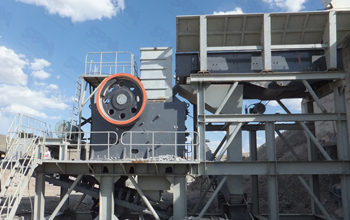

With the rapid economic development in the engineering crushing process, some of the difficult material handling equipment crushing demand. To this end, efficient jaw crusher stand out by industrial crushing industry's favor.
Efficient jaw crusher design, unique structure, crushing ratio up to 9 or more, can well achieve "more crushing and less grinding", energy saving, high strength materials can be broken (ultimate strength ≥500MPa), such as alloys, special structure of silicon carbide materials, metallurgical slag and other hard brittle materials such as concrete and handling, you can get a high quality metal materials and supplies products. The equipment for crushing metal alloy material, not broken objects contain ferrous and ferrous metal slag, slag alloy, reinforced concrete and other construction waste, used metallurgical furnace refractory lining, various minerals and non-metallic materials. At home and abroad to promote the application of the product, can significantly enhance the level of equipment broken field, promote recycling and comprehensive utilization of resources metallurgical slag, concrete and other materials.
Currently, construction sites and reinforced concrete products factory, has accumulated a large number of scrapped and no access to the panels and various parts. Due to the wide application of large prefabricated panels, treatment and recycling of waste concrete and aging parts, has become a very prominent issue. Faced with the rapid development of the city, a large number of old buildings demolished body, in today's era emphasizing recycling economy, secondary use of resources, the more urgent the need for waste processing (crushing and separation of metal and concrete), including crushing large size components such as the size of the floor 3m × 6m, 10m long main vertical columns and other scrap components, some of reinforced concrete structures at the ends may have bent steel or metal-filled portion contains. Standard broken pulverizing apparatus used in the industrial production of the above-mentioned object can not be completed crushing.
Efficient jaw crusher is suitable for crushing brittle materials with high hardness and broken material containing hard materials, but also for its length and width of a relatively large part of the deal, but also for the preparation of fine grade lower content of products. Efficient jaw crusher crushing its good characteristics, can solve the current problem of industry fragmentation, improve material utilization efficiency, reduce emissions from industrial waste.
Jaw crushing equipment and production lines, with its good crushing efficiency and scientific and rational process, production, sales, sales revenue, market share has been stable domestic industry leading position, the company grew steadily efficiency in recent years, in the highly competitive mining equipment industry thriving.
Live chat with our professional customer service! Get the quotation list.
Chat Now